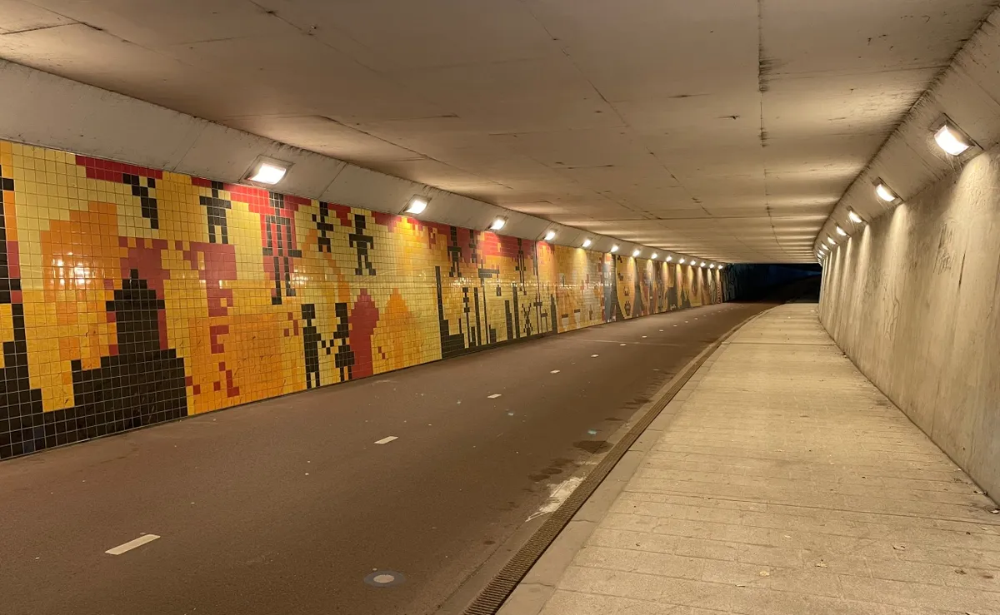
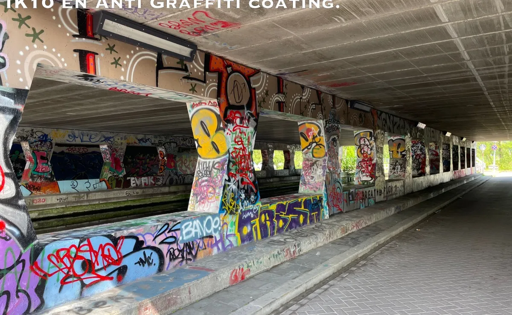

LTA is de lichttransmissiewaarde: hoeveel van het licht door het venster heen naar buiten gaat. Bij ons opalen venster is dat 82%. Een opaal venster verdeelt het licht zachter en verbergt de LED-punten.
Armatuur · Titan
Tunnelarmaturen op maat

Een tunnel of onderdoorgang is zelden standaard: andere maten, een ander plafond, een andere wand, en vaak een geschiedenis van vandalisme. Onze tunnelarmaturen ontwerpen en produceren we daarom in eigen beheer, op jouw specificatie. Tot op heden is geen uitdaging te groot gebleken.
De Titan is de basis: een behuizing van roestvast staal met poedercoating, een venster van polycarbonaat en een LED-module in de uitvoering HE (high efficiency) of UHE (ultra high efficiency). Slagvast tot IK10, optioneel met een antigraffiticoating die je niet ziet maar wel merkt.
Herkenbaar?
Wanneer kies je voor een Titan?
Drie situaties waarin een armatuur op klantspecificatie meer oplevert dan een catalogusproduct.
Nieuwe tunnel of onderdoorgang
De maten en de montage liggen vast in het ontwerp van het kunstwerk. Het armatuur moet daarin passen, niet andersom. We maken de behuizing op de maat van de sparing of de wand.
Veel vandalisme en graffiti
Een polycarbonaat venster in klasse IK10 houdt een klap. Met de antigraffiticoating op behuizing en venster is verf weer schoon te maken zonder dat de coating zichtbaar is.
Bestaande armaturen aan vervanging toe
Vaak hoeft de behuizing niet weg. Met een LED-geartray en een nieuw venster gaat alleen de techniek eruit. Zie retrofit.
Zo werken we
Van sparing tot brandend armatuur
Omdat we ontwerpen, engineeren en produceren in eigen huis, zit er geen schakel tussen jouw vraag en het armatuur dat aan de wand hangt.
-
01
Maten en situatie
Je stuurt de maten van de sparing of de wand, foto's van de situatie en de lichtwens: kleurtemperatuur, dimregime, sturing. Bestaande tekeningen zijn welkom.
Jij levert maten, foto's en de gewenste lichtkleur en sturing
-
02
Ontwerp en engineering
We werken de behuizing, het venster, de optiek en de driver uit en leggen het ontwerp aan je voor. De RAL-kleur van de poedercoating kies je uit de standaardreeks of naar wens.
Jij levert akkoord op tekening en kleur
-
03
Productie in Wormerveer
De behuizing in RVS wordt gemaakt en gepoedercoat, het venster in polycarbonaat gezet, de LED-module en de driver gemonteerd. Optioneel de antigraffiticoating.
-
04
Levering en plaatsing
We leveren de armaturen aan of plaatsen ze zelf, inclusief de inregeling van het dimregime.
Jij levert toegang tot de locatie en de voeding
Opties en uitvoeringen
Wat je kunt kiezen
De vaste onderdelen van de Titan en de opties daarop. Niet genoemd? Vraag het; op klantspecificatie kan meer.
RVS met poedercoating
Roestvast staal, gepoedercoat in een standaard RAL-kleur of conform je wens.
Polycarbonaat, drie uitvoeringen
Transparant, met boomschorseffect of opaal. Opaal heeft een LTA van 82%: 82% van het licht gaat door het venster naar buiten.
Antigraffiti, onzichtbaar
Optioneel op behuizing en venster. Beide coatings zijn na het aanbrengen niet zichtbaar.
IK10
De hoogste slagvastheidsklasse voor armaturen in de openbare ruimte.
2200K, 3000K of 4000K
Standaard in drie kleurtemperaturen. Afwijkende kleuren op aanvraag.
Aan/Uit, DALI, 1-10V of Dynadimmer
DALI of DALI SR, 1-10V, of een Dynadimmer met het standaard 3A-dimregime of een klantspecifiek regime.
60 graden
De optiek bepaalt waar het licht komt; op de projecten hiernaast is dat een hoek van 60 graden.
HE of UHE
High efficiency of ultra high efficiency: hoe meer licht per watt, hoe lager het verbruik bij hetzelfde lichtniveau.
Wat het oplevert
Wat een armatuur op maat oplevert
Het past in het ontwerp
Geen aanpassingen aan de tunnel om het armatuur te laten passen: het armatuur volgt de maten van het kunstwerk.
Bestand tegen een klap en tegen verf
IK10 en een antigraffiticoating, zodat onderhoud schoonmaken is en geen vervangen.
Dimt zoals jij wilt
Aan/Uit, DALI, 1-10V of een Dynadimmer met regime 3A: het armatuur past in je bestaande sturing.
Vijf jaar garantie
Ontworpen en gemaakt in Nederland, met vijf jaar garantie op het armatuur.
In beeld
Titan in de praktijk
Verschillende uitvoeringen van hetzelfde armatuur, elk afgestemd op de tunnel waar het hangt.

2200K en 3000K naast elkaar
Twee kleurtemperaturen in één tunnel
Titan Tuscan Angle in polycarbonaat, IK10, met Dynadimmer 3A, in RVS. De warme en de neutrale lichtkleur zijn hier naast elkaar te zien.

Gebogen venster
Afscherming die de wand volgt
Een gebogen polycarbonaat afscherming in 2200K, dimbaar, langs een wand met mozaïek.

Antigraffiti
Titan HE met 60°-optiek en coating
In een onderdoorgang waar graffiti erbij hoort: IK10 en een antigraffiticoating op behuizing en venster.

Geartray
Dimbare LED-geartray in 2200K
Dezelfde LED-techniek als retrofit in een bestaand tunnelarmatuur, met Dynadimmer 3A.
Onderdoorgang met Titan HE in 2200K
Titan-armaturen met 60°-optiek en antigraffiticoating in een onderdoorgang over het water, in warmwit 2200K.

Fietstunnel met Titan UHE in roestvast staal
Titan DLF13-60-22 in RVS, de UHE-uitvoering (ultra high efficiency), in een fietstunnel bij nacht.

Tunnelverlichting in 3000K met dimregime 3A
Fietstunnel in de schemering met tunnelarmaturen in polycarbonaat, antigraffiticoating en een Dynadimmer met dimregime 3A.

FAQ
Veelgestelde vragen
De Dynadimmer is een regelaar in het armatuur die het licht volgens een vast tijdschema terugregelt, zonder centrale sturing of bekabeling. 3A is het standaardregime dat in de Nederlandse openbare verlichting veel wordt gebruikt; een klantspecifiek regime kan ook.
Ja. Voor bestaande tunnelarmaturen maken we LED-geartrays: de behuizing blijft hangen, de techniek en eventueel het venster worden vernieuwd. Zie de pagina over retrofit.
Contact
Een tunnel die om een eigen armatuur vraagt?
Stuur je maten, tekening of vraag. We denken mee over wat er past en maken een prijsopgave.